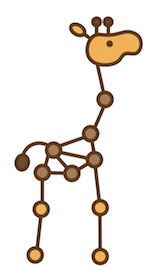

Applied Machine Learning Quarterly (Q2 2021)
Author: Rebekah Thompson
For all of you who enjoyed our list of tools and infrastructures from Q2 of 2020, we're back with another list for you all!
For those of you who are new to our Applied Machine Learning Quartly, welcome! This is an ongoing curated list of interesting new open source machine learning models, tools, and visualizations for 2020. Updated roughly quarterly.
May 2021
Tools and Infrastructure
Model Search
Choosing the best model for your machine learning project can feel daunting at times, but researchers at Google have developed a new, open-source Python framework to hopefully help alleviate that feeling — Model Search (MS).
Google’s Model Search GitHub page describes the framework as:
“Model search (MS) is a framework that implements AutoML algorithms for model architecture search at scale. It aims to help researchers speed up their exploration process for finding the right model architecture for their classification problems (i.e., DNNs with different types of layers).”
- Google’s Model Search GitHub Repository
A depiction of the MS model from Google AI’s blog post on Model Search is shown below. The researchers explained their model as follows:
“Model Search schematic illustrating the distributed search and ensembling. Each trainer runs independently to train and evaluate a given model. The results are shared with the search algorithm, which it stores. The search algorithm then invokes mutation over one of the best architectures and then sends the new model back to a trainer for the next iteration. S is the set of training and validation examples and A are all the candidates used during training and search.”
- Hanna Mazzawi and Xavi Gonzalvo (Authors of the Model Search article)
Based on the currently available version, this library enables you to:
- Run many AutoML algorithms out of the box on your data - including automatically searching for the right model architecture, the right ensemble of models, and the best-distilled models
- Compare many different models that are found during the search
- Create your own search space to customize the types of layers in your neural networks
Resources to get started with Model Search:
RAFT: Recurrent All-Pairs Field Transforms for Optical Flow
Click this link to read the full research paper for RAFT
Zachary Teed and Jia Deng of Princeton University have introduced a new end-to-end deep neural network architecture for optical flow, which is one of the long-standing problems in accurate video analysis. Optical flow is the task of estimating the motion, or direction, of an object between video frames and is often limited by fast-moving objects, a tracked object being blocked by another object, or motion blur.
RAFT consists of three main components:
- A feature encoder that extracts a feature vector for each pixel in two different frames
- A correlation layer that produces a 4D correlation volume for all pairs of pixels, with subsequent pooling to produce lower-resolution volumes
- A recurrent GRU-based update operator that retrieves values from the correlation volumes and iteratively updates a flow field initialized at zero
Image From the Paper: "RAFT: Recurrent All-Pairs Field Transforms forOptical Flow"
According to Teed and Deng’s results in the publication, RAFT’s strengths include the following based on the KITTI Vision Benchmark Suite:
- State-of-the-Art Accuracy: achieved an F1-all error of 5.10%, a 16% error reduction from the best-published result, and an end-point-error of 2.855 pixels, a 30% error reduction from the best-published result
- Strong Generalization: When trained only on synthetic data, RAFT achieved an end-point-error of 5.04% on KITTI, a 40% error reduction from the best deep learning network trained on the same data
- High Efficiency: RAFT processes 1088 x 436 videos at 10 frames per second on a 1080Ti GPU with 10X fewer iterations than other architectures.
Resources to get started with RAFT:
MLOps Questions?
Are you looking for a comparison of different MLOps platforms? Or maybe you just want to discuss the pros and cons of operating a ML platform on the cloud vs on-premise? Sign up for our free MLOps Briefing -- its completely free and you can bring your own questions or set the agenda.
DALL●E
DALL·E, cleverly named after the artist Salvalor Dalí and Pixar’s WALL·E, is a trained neural network from OpenAI that can create images from user input text captions using PyTorch.
According to OpenAI’s page introducing DALL·E:
“DALL·E is a 12-billion parameter version of GPT-3 trained to generate images from text descriptions, using a dataset of text-image pairs. We’ve [DALL·E developers] found that it has a diverse set of capabilities, including creating anthropomorphized versions of animals and objects, combining unrelated concepts in plausible ways, rendering text, and applying transformations to existing images.”
- OpenAi’s DALL·E Article
The captions are not just limited to a single word, such as “dog” or “cat.” With this network, the user can input a phrase such as “an illustration of a baby daikon radish in a tutu walking a dog” and get just that — an illustration of a baby daikon radish in a tutu walking a dog.
Not only does DALL·E work on text prompts, it will also work with the combination of image and text prompts. The image below shows DALL·E attempting to replicate an image of a cat as a sketch after receiving an image and text prompt based on that image.
Resources to get started with DALL·E:
Jraph
Jraph is a graph neural network developed by DeepMind and joins the JAX family, a machine learning framework developed by Google Researchers, as one of its newest members. The developers of Jraph describe it as follows:
“Jraph (pronounced "giraffe") is a lightweight library for working with graph neural networks in jax. It provides a data structure for graphs, a set of utilities for working with graphs, and a 'zoo' of forkable graph neural network models.”
- Jraph GitHub Repository
Jraph takes inspiration from Tensorflow’s graph_nets library when defining its GraphsTuple data structure, a named tuple that contains one or more directed graphs.
Resources to get started with Jraph:
Petting Zoo
Petting Zoo is a Python library created by Justin Terry, currently a Ph.D. Student at the University of Maryland, for conducting and researching multi-agent reinforcement learning. It is similar to OpenAI’s Gym library, but instead of focusing on a single agent, the models focus on training multiple agents. If you have experience with Gym, or even if you don’t, and want to try your hand at training multiple agents, give Petting Zoo a try.
Petting Zoo offers six families of learning environments to train and test your agents including:
- Atari: Multi-player Atari 2600 games (both cooperative and competitive)
- Butterfly: Cooperative graphical games developed by us, requiring a high degree of coordination
- Classic: Classical games including card games, board games, etc.
- MAgent: Configurable environments with massive numbers of particle agents, originally from https://github.com/geek-ai/MAgent
- MPE: A set of simple non-graphical communication tasks, originally from https://github.com/openai/multiagent-particle-envs
- SISL: 3 cooperative environments, originally from https://github.com/sisl/MADRL
For more information check out the links below and also this interview with Justin hosted on Synthetic Intelligence Forum’s YouTube channel for a deeper dive into Petting Zoo and how it can potentially help you with your projects.
Resources to get started with Petting Zoo:
Vision Transformer (ViT)
The use of transformers in image-based tasks and models, such as convolutional neural networks (CNNs), has been gaining in popularity. Imagining the possibilities this addition could bring to the world of image analysis, Google Researchers have introduced Vision Transformer (ViT), a vision model-based as closely as possible to the transformer architecture used in text-based models.
In their Google AI article presenting the new model, the authors explained ViT as the following:
“ViT represents an input image as a sequence of image patches, similar to the sequence of word embeddings used when applying Transformers to text, and directly predicts class labels for the image. ViT demonstrates excellent performance when trained on sufficient data, outperforming a comparable state-of-the-art CNN with four times fewer computational resources.”
- Google Research Scientists, ViT Article
Image Source: Google article on ViT
So, how does this model work? In the same article, the researchers go on to explain just that:
“ViT divides an image into a grid of square patches. Each patch is flattened into a single vector by concatenating all pixels’ channels in a patch and then linearly projecting it to the desired input dimension. Because Transformers are agnostic to the structure of the input elements we add learnable position embeddings to each patch, which allows the model to learn about the structure of the images. A priori, ViT does not know about the relative location of patches in the image, or even that the image has a 2D structure — it must learn such relevant information from the training data and encode structural information in the position embeddings.”
- Google Research Scientists, ViT Article
Resources to get started with Vision Transformer (ViT):
Room-Across-Room (RxR) - Google Research Dataset
One of the latest datasets from Google Research Scientists is called “Room-Across-Room (RxR).” RxR is a multilingual dataset for Vision-and-Language Navigation (VLN) in Matterport3D environments.
The research scientists for RxR describes the dataset as the following from their article:
Image Source: Google Article on RxR
“the first multilingual dataset for VLN, containing 126,069 human-annotated navigation instructions in three typologically diverse languages — English, Hindi and Telugu. Each instruction describes a path through a photorealistic simulator populated with indoor environments from the Matterport3D dataset, which includes 3D captures of homes, offices and public buildings.”
For those who are unfamiliar with Matterport3D, it is a large, diverse RGB-D dataset for scene understanding that contains 10,800 panoramic views from 194,400 RGB-D images of 90 building-scale scenes. Google Researchers took this large dataset and made it even bigger — 10x bigger!
As you can see in the image below, the agent using the RxR dataset moves throughout the different rooms and is being depicted by different colors in the image called “pose traces,” which can be found in further detail in the RxR article. The agent then outputs a corresponding description of what it is seeing. If you compare the text to the agent trajectory, the color of the text matches the colored path in the image.
On top of the introduction of this new dataset, Google Researchers also announced that to keep track of the progression of VLN, they are announcing the RxR Challenge. The RxR Challenge is “a competition that encourages the machine learning community to train and evaluate their instruction following agents on RxR instructions.” If you’re interested in learning more or participating in the competition, visit the link in the resources below.
Resources to get started with RxR:
Extended Summ
Image Source: ExtendedSumm Paper
Full Paper: On Generating Extended Summaries of Long Documents
Do you wish there was a way to help summarize your latest paper or document instead of going back and forth trying to decide what is most important to include? Give ExtendedSumm a try.
Researchers Sajad Sotudeh, Arman Cohan, and Nazli Goharian from the IR Lab at Georgetown University created a method that expands upon previous research that was used to create high-level summaries for short documents. Their method is used to generate a more in-depth, extended summary for longer documents such as research papers, legal documents, and books.
They describe their method as one that “aims at jointly learning to predict sentence importance and its corresponding section” and they describe their methodology as the following in the abstract of their publication:
“Our method exploits hierarchical structure of the documents and incorporates it into an extractive summarization model through a multi-task learning approach. We then present our results on three long summarization datasets, arXiv-Long, PubMed-Long, and Longsumm.”
The study showed that their method either matched or exceeded the baseline, BertSumExt, over a dataset of mixed summarizations that varied in size.
Image Source: ExtendedSumm Paper
Datasets used for this model:
- Longsumm (GitHub Repository)
- ArXiv-Long (ArXiv-Long)
- PubMed-Long (RxR Challenges)
Resources to get started with Extended Summ:
- Longsumm (GitHub Repository)
- Full Research Paper: On Generating Extended Summaries of Long Documents
MLOps Questions?
Are you looking for a comparison of different MLOps platforms? Or maybe you just want to discuss the pros and cons of operating a ML platform on the cloud vs on-premise? Sign up for our free MLOps Briefing -- its completely free and you can bring your own questions or set the agenda.
Natural Language Image Search with a Dual Encoder
Khalid Salama, author of the original article featured on the Kera’s website, gives us a tutorial of how to build a duel-encoder neural network model to search for images using natural language.
“The idea is to train a vision encoder and a text encoder jointly to project the representation of images and their captions into the same embedding space, such that the caption embeddings are located near the embeddings of the images they describe.”
- Khalid Salama, Natural language image search with a Dual Encoder
We will be giving a high-level description and steps involved in this method, but if you’re interested in the full tutorial with screenshots of the code after reading our summary, you can find his full article here.
Requirements for initial setup:
- TensorFlow 2.4 or higher
- TensorFlow Hub (required for BERT model)
- TensorFlow Text (required for BERT model)
- TensorFlow Addons ((required for the AdamW optimizer)
Key steps used in this method:
- Prepare the Data: This example uses the MS-COCO dataset. The MS-COCO dataset contains over 82,000 images that contain 5 different annotations for each image.
- Process and save the data to TFRecord files
- Create “tf.data.Dataset” for training and evaluation
- Implement the Projection Head: The projection head is used to transform the image and the text embeddings to the same embedding space with the same dimensionality
- Implement the Vision Encoder: Xception from Keras Applications is used as the vision encoder for this example
- Implement the Text Encoder: BERT from TensorFlow Hub is used for the text encoder for this example
- Implement the Dual Encoder: Use cross entropy to compute the loss between the targets and the predictions
- Train the Dual Encoder: Freeze the base encoders for text and images. Use only the projection head (created in step 2) trainable
- Search for Images Using Natural Language Input: Put your algorithm to the test to see what images you can generate via a natural language query by:
- Generating embeddings for the image encoder
- Providing a natural language query to the text encoder
- Computing the similarity between the query embedding and the image embeddings in the index to retrieve the indices of the top matches
- Looking for the image paths with the top results
If all goes according to plan, here’s an example of the results you may receive. These results are based on the generated results from Khalid Salama’s article.
Resources to get started:
NeurIPS 2020 Conference Papers
Imagine reading most, if not all, of the research papers from a conference full of innovative work that you may want to implement yourself. It would take a lot of time, right?
Luckily, Prabhu Prakash Kagitha has done the work for us in his articles NeurIPS 2020 Papers: Takeaways for a Deep Learning Engineer and NeurIPS 2020 Papers: Takeaways of a Deep Learning Engineer— Computer Vision. Featured on the blog Towards Data Science, he shares summaries from 2020 Neural Information Processing Systems (NeurIPS) conference with the first blog post based on general deep learning papers and a second post dedicated specifically to papers related to computer vision.
The links below will take you to each of the featured papers, but I highly recommend reading his summaries first if you’re short on time. He does a great job of summarizing the main topic, results, and provides a practical, key takeaway for deep learning engineers who do not have the time to read through the entire paper or summary.
The images below, created by Prabhu, show an overview of the topics covered in each section.
Papers featured in Prabhu's general deep learning post include:
- Accelerating Training of Transformer-Based Language Models with Progressive Layer Dropping - Minjia Zhang and Yuxiong He
- Coresets for Robust Training of Neural Networks against Noisy Labels - Baharan Mirzasoleiman, Kaidi Cao, and Jure Leskovec
- The Lottery Ticket Hypothesis for Pre-trained BERT Networks - Tianlong Chen, Jonathan Frankle et al
- MPNet: Masked and Permuted Pre-training for Language Understanding - Kaitao Song, Xu Tan et al
- Identifying Mislabeled Data using the Area Under the Margin Ranking - Geoff Pleiss, Tianyi Zhang et al
- Rethinking the Value of Labels for Improving Class-Imbalanced Learning - Yuzhe Yang and Zhi Xu
- Big Bird: Transformers for Longer Sequences - Manzil Zaheer, Guru Guruganesh et al
- Improving Auto-Augment via Augmentation-Wise Weight Sharing - Keyu Tian, Chen Lin et al
- Fast Transformers with Clustered Attention - Apoorv Vyas, Angelos Katharopoulos, and François Fleuret
- Limits to Depth Efficiencies of Self-Attention - Yoav Levine, Noam Wies et al
Image Source: Prabhu's computer vision post
Papers featured in Prabhu's computer vision post include:
- Rethinking Pre-training and Self-training - Barret Zoph, Golnaz Ghiasi et al
- RelationNet++: Bridging Visual Representations for Object Detection via Transformer Decoder - Cheng Chi, Fangyun Wei, and Han Hu
- Quantifying Learnability and Describability of Visual Concepts Emerging in Representation Learning - Iro Laina, Ruth Fong, and Andrea Vedaldi
- A Ranking-based, Balanced Loss Function Unifying Classification and Localisation in Object Detection - Kemal Oksuz, Baris Can Cam et al
- Disentangling Human Error from the Ground Truth in Segmentation of Medical Images - Le Zhang, Ryu Tanno et al
- Variational Amodal Object Completion - Huan Ling, David Acuna et al
- RandAugment: Practical Automated Data Augmentation with a Reduced Search Space - Dogus Cubuk, Barret Zoph et al
- Learning Loss for Test-Time Augmentation - Ildoo Kim, Younghoon Kim, and Sungwoong Kim
Papers with Code’s Trending Papers, Libraries, and Benchmarks of 2020
Instead of scouring the internet for the latest or most popular journals and models, it’s always nice to have a nice list to make the search easier, right? Well, you’re in luck!
In his featured article, Papers with Code 2020: A Year in Review, Ross Taylor lists the top 10 research papers, libraries, and benchmarks for 2020 from the Papers with Code blog. Below, we’ve listed five links from each section that we believe you will find interesting.
After you’ve finished reading the summaries below, you can click here to read the rest of Ross Taylor’s article and see what else trended last year on Paper with Code.
Top Research Papers:
-
EfficientDet: Scalable and Efficient Object Detection — Tan et al
-
In this paper, the authors study neural network architecture design choices for object detection and propose optimizations to improve efficiency. They first proposed a weighted bi-directional feature pyramid (BiFPN) and a compound scaling method which helped them develop a new family of object detectors called EfficientDet.
The code for EfficientDet can be found at this URL.
-
In this paper, the authors study neural network architecture design choices for object detection and propose optimizations to improve efficiency. They first proposed a weighted bi-directional feature pyramid (BiFPN) and a compound scaling method which helped them develop a new family of object detectors called EfficientDet.
-
Fixing the train-test resolution discrepancy: FixEfficientNet — Touvron et al
-
The authors of this paper provide an extensive analysis of the EfficientNet model and corrects the discrepancy between training and test images. With this correction, they developed a new model called FixEfficientNet, which, according to the authors, “significantly outperforms the initial architecture with the same number of parameters.”
The code for FixEfficientNet can be found at this URL.
-
The authors of this paper provide an extensive analysis of the EfficientNet model and corrects the discrepancy between training and test images. With this correction, they developed a new model called FixEfficientNet, which, according to the authors, “significantly outperforms the initial architecture with the same number of parameters.”
-
Self-training with Noisy Student improves ImageNet classification — Xie et al
-
Noisy Student is a semi-supervised learning method that achieves 88.4% top-1 accuracy on ImageNet. The authors describe their methods as the following in the abstract of this paper, “On ImageNet, we first train an EfficientNet model on labeled images and use it as a teacher to generate pseudo labels for 300M unlabeled images. We then train a larger EfficientNet as a student model on the combination of labeled and pseudo labeled images. We iterate this process by putting back the student as the teacher. During the learning of the student, we inject noise such as dropout, stochastic depth, and data augmentation via RandAugment to the student so that the student generalizes better than the teacher.”
The models for Noisy Student can be found at this URL.
The code for Noisy Student can be found at this URL.
-
Noisy Student is a semi-supervised learning method that achieves 88.4% top-1 accuracy on ImageNet. The authors describe their methods as the following in the abstract of this paper, “On ImageNet, we first train an EfficientNet model on labeled images and use it as a teacher to generate pseudo labels for 300M unlabeled images. We then train a larger EfficientNet as a student model on the combination of labeled and pseudo labeled images. We iterate this process by putting back the student as the teacher. During the learning of the student, we inject noise such as dropout, stochastic depth, and data augmentation via RandAugment to the student so that the student generalizes better than the teacher.”
-
YOLOv4: Optimal Speed and Accuracy of Object Detection — Bochkovskiy et al
-
This paper explains the most recent version of one of the most popular object detection algorithms, YOLO. In the abstract of their publication, the developers state the following in regards to new features in their model: “We use new features: WRC, CSP, CmBN, SAT, Mish activation, Mosaic data augmentation, CmBN, DropBlock regularization, and CIoU loss, and combine some of them to achieve state-of-the-art results: 43.5% AP (65.7% AP50) for the MS COCO dataset at a realtime speed of ∼65 FPS on Tesla V100.”
The code for YOLOv4 can be found at this URL.
-
This paper explains the most recent version of one of the most popular object detection algorithms, YOLO. In the abstract of their publication, the developers state the following in regards to new features in their model: “We use new features: WRC, CSP, CmBN, SAT, Mish activation, Mosaic data augmentation, CmBN, DropBlock regularization, and CIoU loss, and combine some of them to achieve state-of-the-art results: 43.5% AP (65.7% AP50) for the MS COCO dataset at a realtime speed of ∼65 FPS on Tesla V100.”
-
Exploring the Limits of Transfer Learning with a Unified Text-to-Text Transformer — Raffel et al
-
In this paper, the authors explore transfer learning for natural language processing (NLP). The authors state that they have achieved state-of-the-art results on many benchmarks covering summarization, question answering, text classification, and more through their study that compares pre-training objectives, architectures, unlabeled data sets, transfer approaches, and other factors on dozens of language understanding tasks.
The code for this project can be found at this URL.
-
In this paper, the authors explore transfer learning for natural language processing (NLP). The authors state that they have achieved state-of-the-art results on many benchmarks covering summarization, question answering, text classification, and more through their study that compares pre-training objectives, architectures, unlabeled data sets, transfer approaches, and other factors on dozens of language understanding tasks.
Top Libraries:
- Transformers - HuggingFace
- Transformers from HuggingFace is currently one of the most popular libraries in the world of natural language processing. According to their GitHub, “Transformers provides thousands of pretrained models to perform tasks on texts such as classification, information extraction, question answering, summarization, translation, text generation, etc in 100+ languages. Its aim is to make cutting-edge NLP easier to use for everyone.” Transformers also provides seamless integration between PyTorch and Tensorflow, which allow you to train in one and load it into the other, if you wish to do so.
- Dectron2 - Facebook AI Research
- Dectron2 is a ground-up rewrite of its previous version, Dectron, powered by the PyTorch deep learning framework. New features in this update include: panoptic segmentation, Densepose, Cascade R-CNN, rotated bounding boxes, PointRend, DeepLab, and more. Researchers also emphasize a faster training time and the ability to export models to TorchScript format of Caffe2 format for deployment.
- DarkNet - pjreddie
- DarkNet is an open-source neural network framework for computer vision written in C and CUDA that supports CPU and GPU computation. The DarkNet framework is the framework used for all versions of YOLO, which was mentioned above as one of the top research papers on Papers with Code for 2020 with YOLOv4.
- PyTorch Image Models — Ross Wightman
- “PyTorch Image Models (timm) is a collection of image models, layers, utilities, optimizers, schedulers, data-loaders / augmentations, and reference training / validation scripts that aim to pull together a wide variety of SOTA models with ability to reproduce ImageNet training results.” - Ross Wightman (PyTorch Image Models GitHub)
- FairSeq — PyTorch
- “Fairseq is a sequence modeling toolkit written in PyTorch that allows researchers and developers to train custom models for translation, summarization, language modeling and other text generation tasks.” - FairSeq Full Documentation Pages
Top Benchmark Datasets:
- Cityscapes — Semantic Segmentation
-
Cityscapes is a large-scale dataset that specifically focuses on semantic understanding in urban environments. This dataset consists of 5,000 annotated images with fine annotations and 20,000 annotated images with coarse annotations from 50 cities during various times of the day and weather conditions.
Download the Cityscapes dataset at this URL.
Find the full Papers with Code article for Cityscapes at this URL. - ImageNet — Image Classification
-
Created and introduced by Deng, et al in their paper ImageNet: A large-scale hierarchical image database, ImageNet is a large dataset containing millions of annotated images used for object recognition, image classification, and more.
Find the ImageNet dataset at this URL.
Find the full research paper at this URL.
Find the full Papers with Code article for ImageNet at this URL. - COCO — Object Detection / Instance Segmentation
-
COCO, or MS COCO, short for Microsoft Common Objects in Context, is a large dataset focused on object detection,segmentation, key-point detection, and captioning. This dataset aims to identify objects based on a natural, everyday scene (in context) compared to the object in isolation.
Download the COCO dataset at this URL.
Find the full Papers with Code article for COCO at this URL. - MPII Human Pose — Pose Estimation
-
This dataset is used for human pose estimation. The dataset includes approximately 25,000 images of approximately 40,000 people with annotated body joints. This dataset captures individuals performing 410 activities each with an activity label.
Download the MPII Human Pose dataset at this URL.
Find the full research paper related to MPII Human Pose at this URL.
Find the full Papers with Code article for MPII Human Pose at this URL. - Market-1501 — Person Re-Identification
-
Market-1501 is a large-scale dataset for person re-identification. The dataset contains 1501 identities captured by six different cameras, so each person in the dataset has approximately 3.6 images at each viewpoint.
Download the Market-1501 dataset at this URL.
Find the full research paper related to Market-1501 at this URL.
Find the full Papers with Code article for Market-1501 at this URL.
Don’t forget to take a look at other posts from our blog to see how we used some of these items for ours and our partners’ projects!